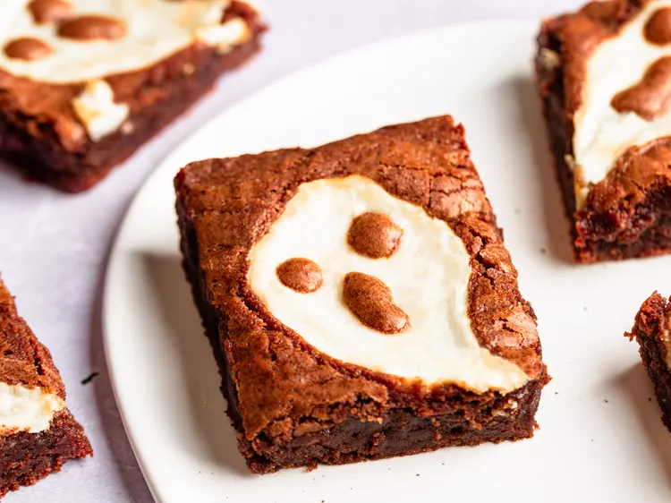

Ghost Cheesecake Brownies

Description
Ghost Cheesecake Brownies - Do Ghosts Exist? There is no way to make our fudgy chocolate brownie recipe any better.
Unless, you maybe swirled some cheesecake batter into the top before you baked them. But other than that, there'd really be no way to improve them.
Unless, it was Halloween, and you made those swirls of cheesecake look like ghosts!
Ingredients
- Chocolate Brownies:
- 3 ounces dark chocolate, chopped
- ½ cup unsalted butter, melted
- 2 large eggs
- 1 ¼ cups granulated sugar
- 1 teaspoon vanilla extract
- ¾ teaspoon kosher salt
- ⅔ cup all-purpose flour
- Cheesecake Ghosts:
- ½ (8 ounce) package cream cheese, softened
- 2 tablespoons white sugar
- 1 large egg white
- ¼ teaspoon vanilla extract
Steps
- Gather all ingredients. Grease an 8x8 baking dish and line with parchment paper.
- Place chopped chocolate into a heatproof bowl. Melt butter in a sauce pan over medium heat and pour over chocolate.
Let sit for 5 minutes until chocolate starts to melt. Mix well until chocolate has completely melted.
- Combine eggs and sugar in a bowl and mix with an electric mixer on high speed until light and pale yellow in color.
Add vanilla extract and salt. Continue mixing on high for 1 minute.
- Transfer in chocolate-butter mixture and mix until well combined for 30 seconds. Fold in flour with a spatula until flour
has disappeared. Set aside 2 teaspoons of brownie batter.
- Transfer remaining batter into the baking dish and distribute evenly. Smooth out the top with a spatula.
- For the cheesecake ghosts combine softened cream cheese, sugar, egg white, and vanilla extract in a bowl.
Whisk until mixture is well combined.
- Set 9 tablespoons of cheesecake dollops onto the brownie batter in an even pattern. Spread out dollops into ghost-like
shapes with a spoon and a bamboo skewer.
- Transfer reserved brownie batter into a small plastic bag, snip off one corner, and pipe 2 eyes and a mouth onto
each cheesecake ghost. Preheat the oven to 350 degrees F (175 degrees C).
- Bake brownies in the center of the oven until edges are lightly golden brown and the center is just set, 35 to 40 minutes.
Because these are very fudgy, chewy style brownies, a toothpick will not come out clean, so that's not a reliable test
for this recipe.
- Allow brownies to cool completely in the pan before transferring them to a plate and cutting them into squares.
- Serve and enjoy.
Conclusion
These taste delicious and are perfect for your next Halloween party, you sure have to try them out!
Back to top of page
Homepage